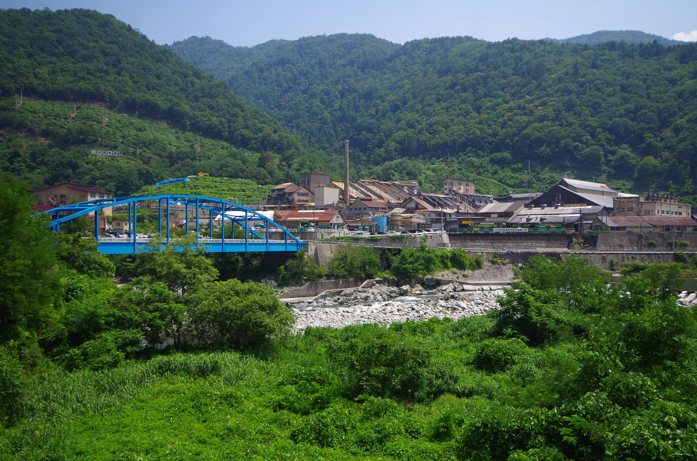
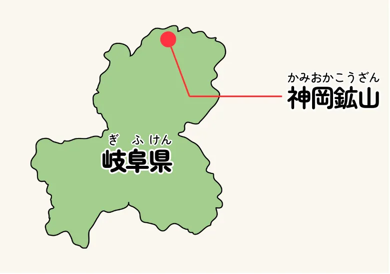
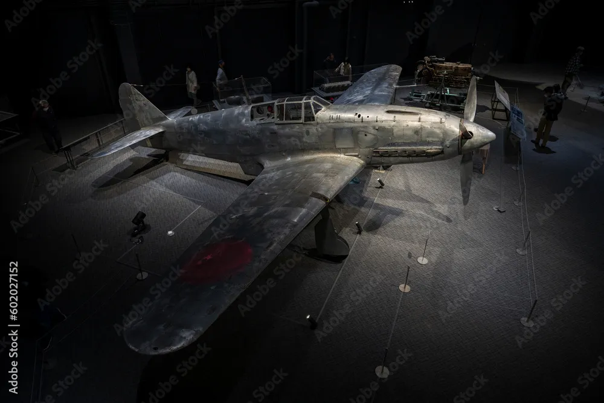
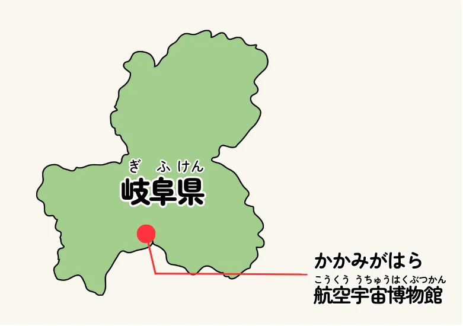

岐阜の名所紹介 神岡鉱山


先進技術の粋 岐阜
ハマボウ
神岡鉱山
岐阜県の北部にある、ここ神岡鉱山は関ヶ原の戦いよりもずっと前、奈良時代から採掘が続けられていたんだよ。 亜鉛、銀、石灰石とかを採っていて、その規模は東洋一と言われていたんだ。 でも、大規模に採掘しながら、採掘した時に出てくるカドミウムのような有害物質を処理してこなかったから戦国時代の頃には、もう公害に悩まされていたんだ。昭和時代になると、富山県側の神通川の下流では、ちょっとしたことで骨が折れてしまうイタイイタイ病が蔓延したんだ。……怖いね。 今はもう採掘はしていないんだけど、残った大きな地下空洞を使って、宇宙からやって来るニュートリノを観測するためのスーパーカミオカンデが建設されているよ。

岐阜の名所紹介
岐阜かかみがはら
航空宇宙博物館


先進技術の粋 岐阜
ハマボウ
岐阜かかみがはら航空宇宙博物館
各務原には太平洋戦争の前に日本の航空機の試験を進めるために大きな飛行場が作られたんだ。東西に真っ直ぐ伸びる滑走路は今でも自衛隊が使用していて、時折行われる航空パレードは大人気なんだ。 そして、そんな各務原の歴史を伝えるために各務原航空宇宙博物館があるんだよ。航空も宇宙も扱うのは、宇宙産業が航空産業から発展していったからなんだって。 ここでは、戦中の日本軍では珍しかった液冷エンジンを搭載した戦闘機、飛燕の実物が飾られているよ。飛燕の実物は他では見られない貴重なものなんだ。 そして宇宙コーナーでは、日本の宇宙開発を支えてくれたH-Ⅱロケットをはじめとして、世界でも先進的な宇宙関連技術の数々が紹介されているよ。